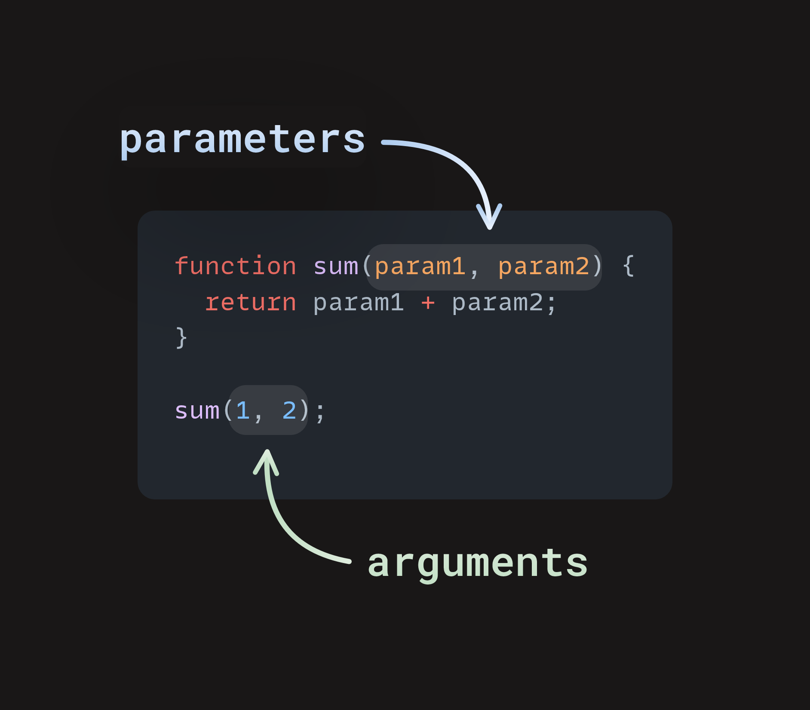

Introducere
Lucrurile sunt pe cale sa devina cu adevarat interesante. Pana acum ai scris o cantitate impresionanta de cod pentru a rezolva diverse probleme, dar acel cod nu a fost atat de util pe cat ar putea fi.
Imagineaza-ti ca iei unul dintre scripturile tale si il impachetezi intr-un mic pachet pe care il poti folosi din nou si din nou fara a fi nevoie sa rescrii sau sa modifici codul. Aceasta este puterea functiilor, iar ele sunt utilizate constant in JavaScript.
Functii
Sa discutam despre parametri si argumente in contextul urmatorului exemplu de functie:
function favoriteAnimal(animal) {
return animal + " is my favorite animal!"
}
console.log(favoriteAnimal('Goat'))
In JavaScript, parametrii sunt elementele enumerate intre parantezele () in declaratia functiei. Argumentele functiei sunt valorile reale pe care alegem sa le transmitem functiei.
In exemplul de mai sus, definitia functiei este scrisa pe prima linie: function favoriteAnimal(animal). Parametrul, animal, se gaseste in interiorul parantezelor. Am putea la fel de bine sa inlocuim animal cu pet, x sau blah. Dar, in acest caz, denumirea parametrului animal ofera celui care citeste codul nostru un pic de context, astfel incat sa nu fie nevoit sa ghiceasca ce va contine animal.
Prin plasarea lui animal in interiorul parantezelor functiei favoriteAnimal(), ii spunem JavaScript-ului ca vom trimite o anumita valoare functiei favoriteAnimal. Asta inseamna ca animal este doar un substitut pentru o valoare viitoare. Dar ce valoare transmitem?
Ultima linie, favoriteAnimal('Goat'), este locul in care apelam functia favoriteAnimal si transmitem valoarea 'Goat' in acea functie. Aici, 'Goat' este argumentul nostru. Ii spunem functiei favoriteAnimal: „Te rog sa trimiti 'Goat' functiei favoriteAnimal si sa folosesti 'Goat' oriunde apare substitutul 'animal'.” Datorita flexibilitatii oferite de utilizarea unui parametru, putem declara orice animal ca fiind preferatul nostru.
Aici este o diagrama pentru a te ajuta sa vizualizezi modul in care parametrii sunt transmisi unei functii si cum valorile sunt returnate din aceasta.
Observa faptul ca, apeland favoriteAnimal() in interiorul console.log() cu argumentul 'Goat', obtinem valoarea returnata a functiei, adica sirul "Goat is my favorite animal!", afisat in consola. Transmitem un apel de functie favoriteAnimal('Goat') ca argument intr-un alt apel de functie - log().
Pastreaza aceasta posibilitate in minte, deoarece vei transmite apeluri de functii ca argumente destul de des. Daca doar apelam functia fara sa folosim console.log pentru a afisa valoarea returnata, nimic nu ar aparea in consola, dar functia ar returna totusi acel sir.
Experimenteaza cu codul pe cont propriu si inlocuieste 'Goat' cu animalul tau preferat. Observi cum putem schimba argumentul in orice dorim? Incearca sa modifici animal atat in declaratia functiei, cat si in corpul acesteia. Ce se intampla cand faci asta?